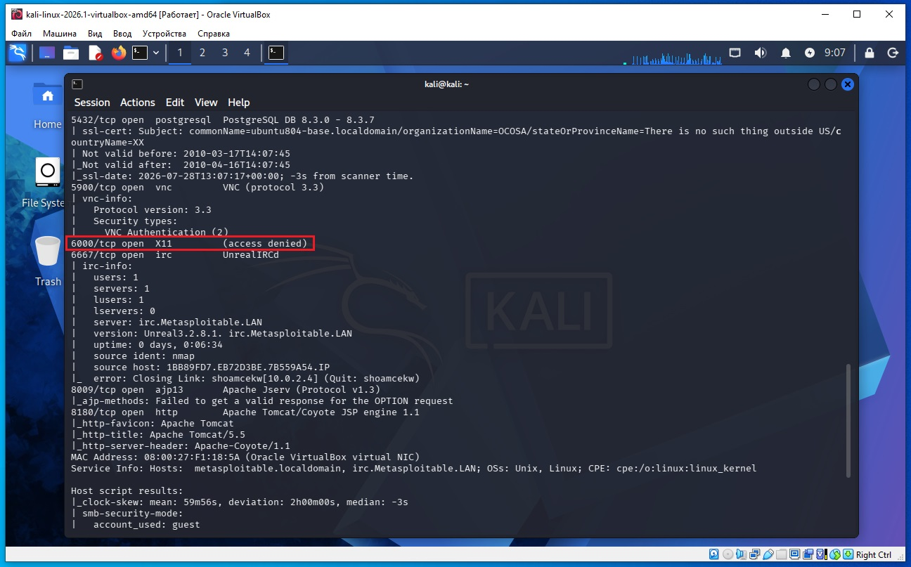
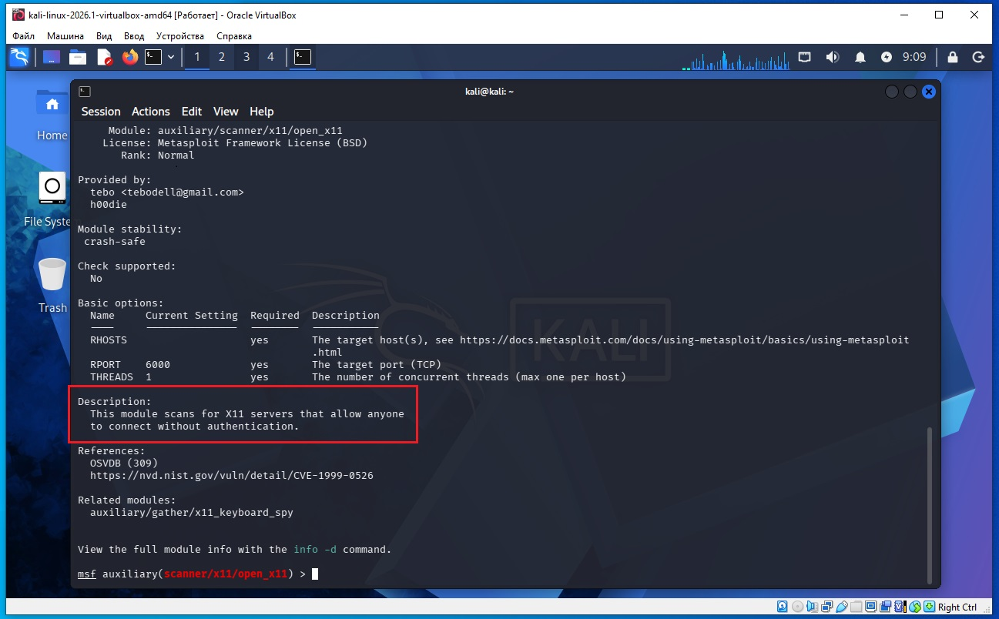
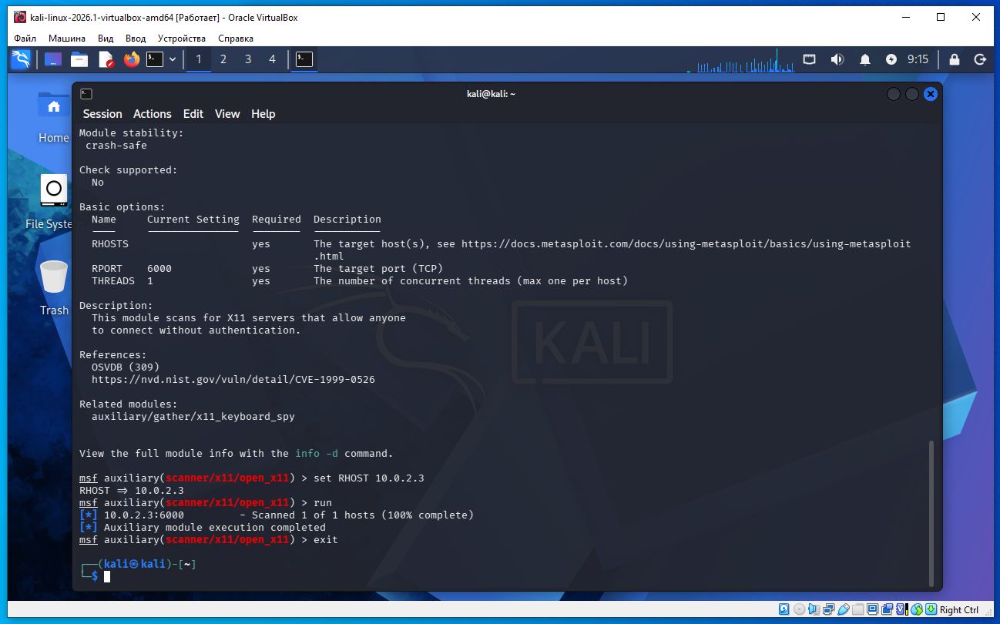
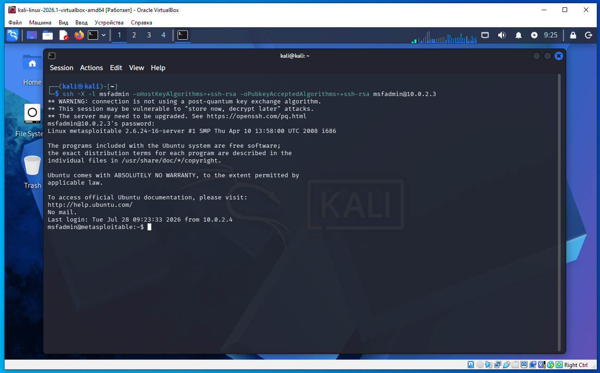
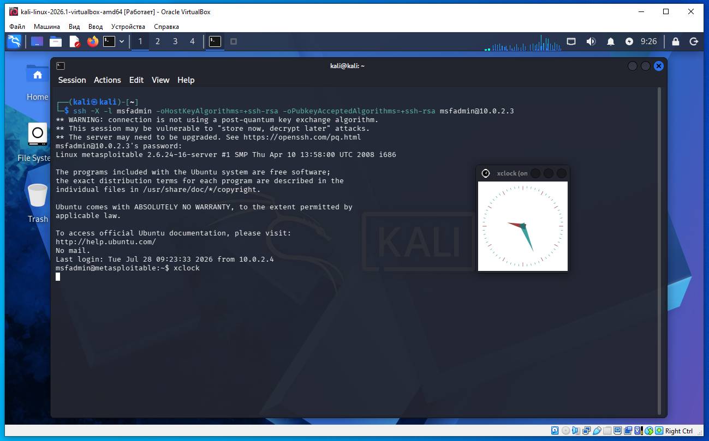
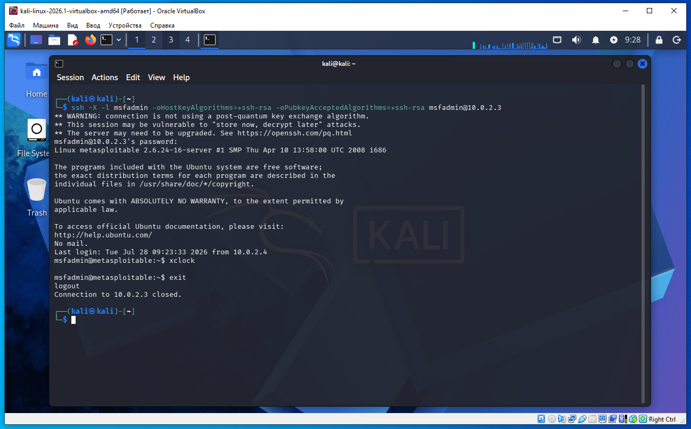

Предполагается что все действия выполняются на виртуальных машинах VirtualBox.
Начинаем атаку на удаленную машину Metasploitable 2.
Необходимо определить IP с машиной Metasploitable 2. Для этого сначала определим наш IP и маску подсети, для этого дадим команду в терминале Kali:
ifconfig
В результатах вывода команды выше, можно увидеть такую строку:
inet 10.0.2.4 netmask 255.255.255.0
То есть наш IP 10.0.2.4 а диапазон IP адресов нашей сети 10.0.2.0/24 (это обяснялось ранее в предыдущих статьях).
Для обнаружения других компьютеров в сети и в том числе нашей удаленной машины Metasploitable 2, дадим команду в терминале Kali:
sudo netdiscover -r 10.0.2.0/24
В выводе команды:
10.0.2.2 08:00:27:3a:17:ed 1 60 PCS Systemtechnik GmbH 10.0.2.3 08:00:27:f1:18:5a 1 60 PCS Systemtechnik GmbH
10.0.2.2 - это виртуальный роутер, который управляет нашей сетью.
10.0.2.3 - это наша машина (по логике) с Metasploitable 2.
Проверим связь между нашей Kali и удаленной ВМ Metasploitable 2, дадим команду:
ping 10.0.2.3
Если сеть в VirtualBox настроена правильно, видим пинг идет, связь есть.
На Kali выполняем команду в терминале:
nmap -sC -sV 10.0.2.3
В выводе nmap находим такую строку (сриншот ниже):
6000/tcp open X11 (access denied)
Это значит на порту Port 6000 имеется X11.

Запускаем консоль метсплоит:
msfconsole
После запуска метасплоит даем команду поиска X11:
msf > search X11
msf > use auxiliary/scanner/x11/open_x11
msf auxiliary(scanner/x11/open_x11) > info
Команда info вернула:

На скриншоте выше описание модуля такое:
Этот модуль сканирует сеть в поисках X11-серверов, которые позволяют любому пользователю подключаться без какой-либо аутентификации (авторизации).
Далее даем команды:
msf auxiliary(scanner/x11/open_x11) > set RHOST 10.0.2.3
msf auxiliary(scanner/x11/open_x11) > run

Если ранее nmap показал:
6000/tcp open X11 (access denied)
то это означает второй вариант: X11 работает, но не разрешает анонимное подключение, поэтому модуль open_x11 ничего не нашел. Это нормальный результат для правильно настроенного X11-сервера. То есть X11-сервер не позволяет подключиться без прохождения аутентификации. На удаленной машине есть X11-сервер, но он не разрешает подключение без авторизации.
Раз прямое подключение к X11 запрещено, сначала войдите на удаленную машину обычным способом (по логину и паролю), а затем используйте X11 через SSH.
Даем следующую команду в терминале Kali Linux:
ssh -X -l msfadmin -oHostKeyAlgorithms=+ssh-rsa -oPubkeyAcceptedAlgorithms=+ssh-rsa msfadmin@10.0.2.3
При запросе пароля вводим msfadmin (это обсуждалось ранее, вход по ssh).

Теперь мы зашли на удаленную машину Metasploitable 2 и можем выполнить команды X11, например команда:
xclock

Для выхода из приложения xclock нажимаем сочетание клавишь Ctr + C.
Для выхода из сессии Metasploitable 2 вводим команду exit и возвращаемся в командную строку Kali.

В этом примере показывается, как проверить, разрешает ли X11 удаленные подключения, а затем использовать безопасное перенаправление X11 через SSH.
Что означает команда (сокращенно):
ssh -X -l msfadmin 192.168.79.179
Разберем полностью.
ssh
подключение по SSH.
-l msfadmin
указывает имя пользователя.
То же самое можно написать так:
ssh msfadmin@192.168.79.179
Что делает ключ -X
Это X11 Forwarding — перенаправление графических окон через SSH.
После подключения все графические программы будут запускаться на удаленной машине, но их окна будут отображаться на нашем компьютере.
Например:
ssh -X msfadmin@192.168.79.179
после входа можно выполнить
xclock
или
xeyes
или (если установлено)
gedit
и окно появится у нас локально.
Сама программа работает на удаленном компьютере, а изображение передается по защищенному SSH-каналу.
Почему сначала проверяли X11, а потом используем SSH?
Потому что это два разных способа.
Первый
Подключиться напрямую к X11:
Клиент
|
TCP 6000
|
X11 Server
Так раньше часто делали.
Недостатки:
нет шифрования;
слабая аутентификация;
можно перехватывать нажатия клавиш;
можно делать снимки экрана;
можно внедрять события мыши и клавиатуры.
Поэтому сейчас этот способ почти не используют.
Второй
Использовать SSH с ключм -X.
Клиент
|
SSH (22)
|
X11 Forwarding
|
X Server
Здесь X11 вообще не доступен из сети напрямую.
Весь графический трафик идет внутри SSH.
Это:
шифруется;
требует авторизации по SSH;
значительно безопаснее.
Почему после Access Denied можно использовать SSH?
Потому что:
Access Denied
относится только к прямому подключению к X11 по порту 6000.
А команда
ssh -X
использует совершенно другой механизм:
пользователь проходит аутентификацию по SSH (логин/пароль или ключ);
SSH создает защищенный канал;
внутри этого канала автоматически организуется соединение с X11.
Поэтому даже если X11 запрещает подключения на порт 6000, X11 Forwarding через SSH может работать, если он разрешен в настройках SSH-сервера. Это считается стандартным и безопасным способом удаленного запуска графических приложений.
Идея всего примера
В статье такая последовательность:
Проверили, открыт ли X11 для всех.
Получили ответ Access Denied — значит, напрямую подключиться нельзя.
Тогда используем легальный механизм SSH с X11 Forwarding, который после успешного входа пользователя позволяет безопасно работать с графическими приложениями.
То есть смысл примера не в том, чтобы «войти в X11», а в том, чтобы показать: если прямой доступ к X11 закрыт, можно использовать X11 Forwarding через SSH после обычной аутентификации на сервере.
Строка:
6000/tcp open X11 (access denied)
означает следующее:
6000/tcp — открыт TCP-порт 6000.
open — порт доступен, на нем работает служба.
X11 — Nmap определил, что на этом порту запущен X11 (X Window System, графическая подсистема Linux/Unix).
(access denied) — сервер X11 ответил, но отказал в подключении из-за отсутствия разрешения на доступ.
VNC и X11 решают похожую задачу — работу с графическим интерфейсом удаленно, но делают это совершенно по-разному.
X11
X11 (X Window System) — это графическая система Linux/Unix. Она изначально была спроектирована так, чтобы программы могли отображать окна как локально, так и по сети.
Принцип работы:
программа (X-клиент) выполняется на удаленном компьютере;
изображение отдельных окон передается на ваш компьютер, где работает X-сервер;
клавиатура и мышь передают события обратно удаленной программе.
VNC
VNC (Virtual Network Computing) работает совсем иначе.
На удаленном компьютере запускается VNC-сервер, который захватывает изображение рабочего стола целиком и передает его клиенту как видеопоток (точнее, как обновления изображения экрана).
Вы видите полностью удаленный экран так, словно сидите перед этим компьютером.